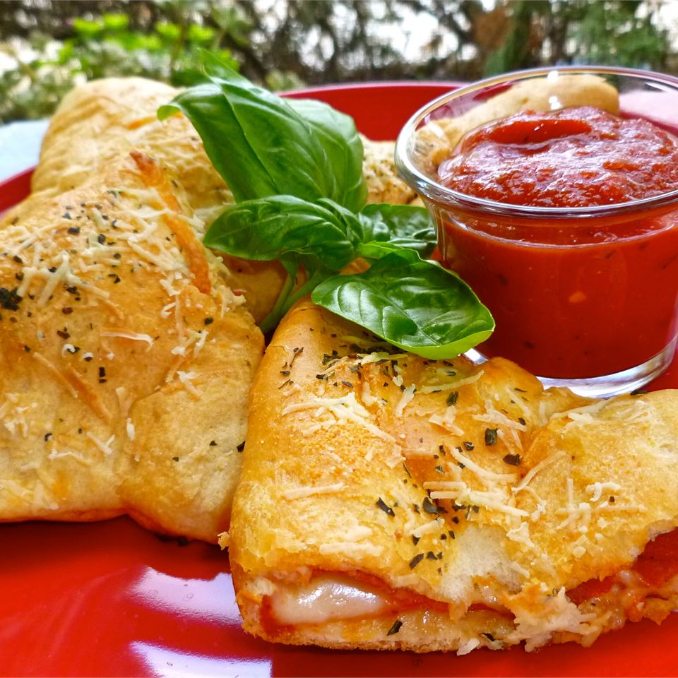

Crescent Pizza Pockets

Description
Make perfect pizza pockets by wrapping pizza sauce, mozzarella, and pepperoni in crescent dough and baking until golden brown.
Ingredients
- 1 (8 ounce) can Pillsbury® refrigerated crescent dinner rolls
- ¼ cup pizza sauce
- ¾ cup shredded mozzarella cheese
- ½ cup sliced pepperoni
- 1 teaspoon grated Parmesan cheese
Steps
- Heat oven to 375 degrees F. Unroll dough on cookie sheet and separate into 4 rectangles; press each into 6x4-inch rectangle, firmly pressing perforations to seal.
- Spread 1 tablespoon pizza sauce on half of each rectangle to within 1 inch of edge. Sprinkle each with 3 tablespoons cheese; top with 6 slices pepperoni. Fold dough diagonally over filling; firmly press edges with fork to seal. Sprinkle each triangle with 1/4 teaspoon grated cheese. With fork, prick top of each to allow steam to escape.
- Bake 13 to 15 minutes or until deep golden brown. Serve warm.
Back to top of page
Back to home page